Cara Install Java JDK (Java Development Kit)
Sebelumnya kita telah melihat ada 2 versi JDK yang populer digunakan, yakni Oracle JDK dan OpenJDK. Sebenarnya kedua aplikasi ini tidak banyak perbedaan, namun di sini saya akan memakai Oracle JDK.
Pada saat tutorial ini di update, versi terakhir dari Oracle JDK adalah versi 16, atau lengkapnya Java SE Development Kit 16. Inisial SE di sini merupakan singkatan dari Standar Edition.
Info dari pihak Oracle, mereka akan merilis versi baru setiap 6 bulan sekali, sehingga sangat mungkin ketika anda membaca tutorial ini sudah keluar JDK 17, JDK 18, dst. Seharusnya cara menginstall JDK akan tetap sama, perbedaan nanti hanya dari nama file atau nama folder instalasi saja.
Cara Download Java JDK
- Baik, hal pertama yang perlu kita lakukan adalah mendownload atau mengunduh JDK 16 dari web resminya di alamat berikut: https://www.oracle.com/java/technologies/javase-downloads.html
- Di halaman tersebut terdapat pilihan JDK untuk berbagai sistem operasi. Karena menggunakan Windows 10 64bit, maka saya akan pilih jdk-15_windows-x64_bin.exe. Untuk pilihan OS Windows sendiri ada 2 jenis, yakni versi .zip atau .exe. Agar lebih mudah, pilih yang versi .exe saja.
- Sebelum klik link download, jangan lupa centang persetujuan lisensi terlebih dahulu. Ukuran JDK 15 ini cukup besar, yakni sekitar 159 MB.
- Setelah aplikasi JDK selesai di download, double klik untuk mulai proses instalasi. Proses instalasi sendiri sama seperti menginstall aplikasi biasa, cukup klik tombol OK atau Next beberapa kali dan biarkan pilihan default.
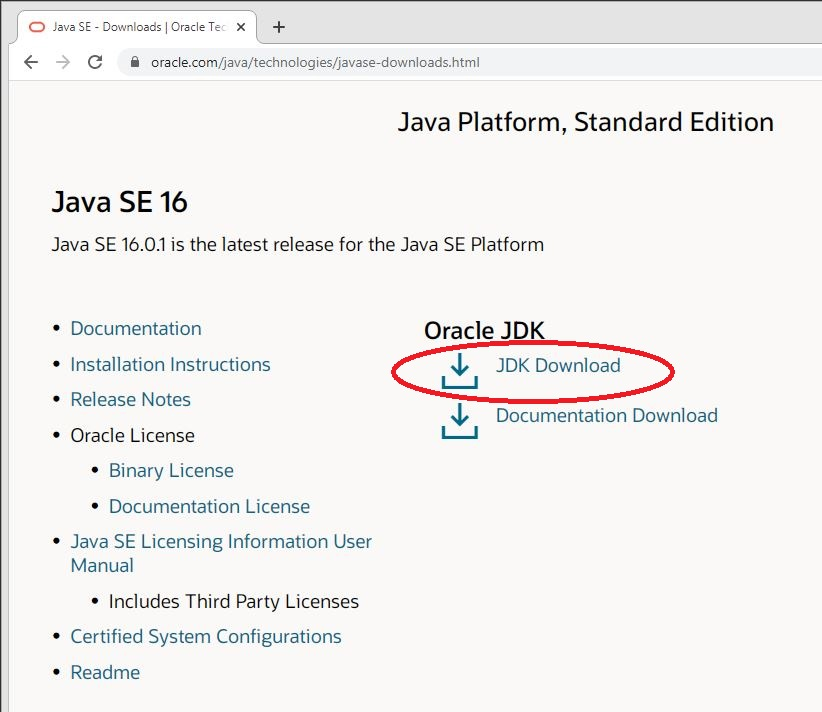
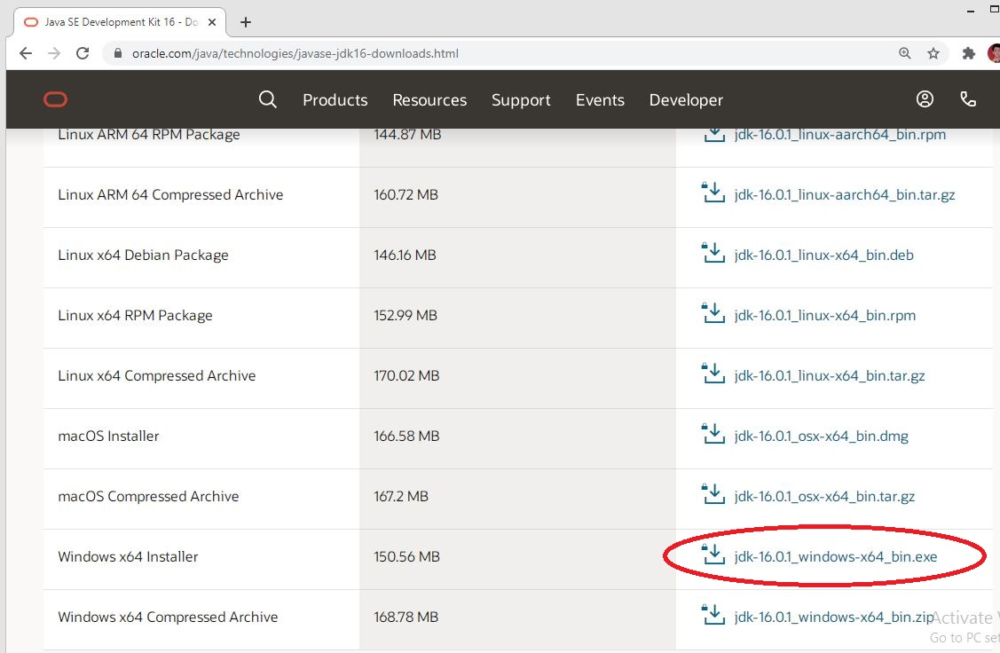
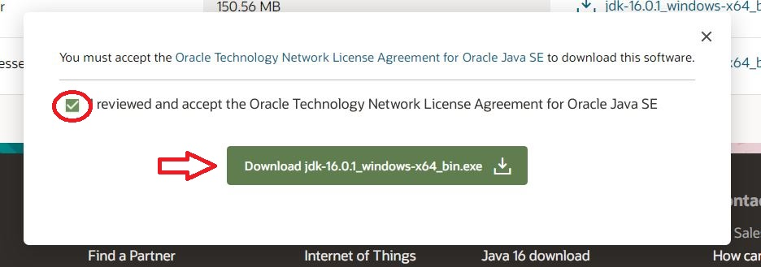
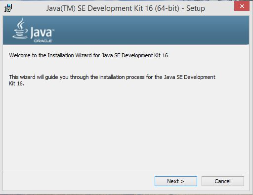
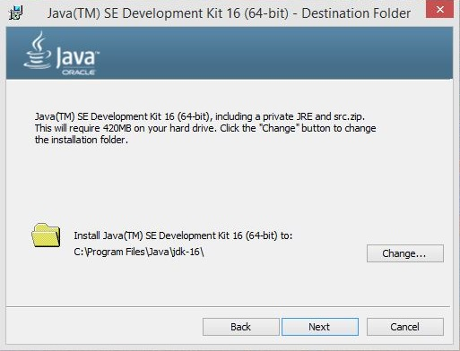
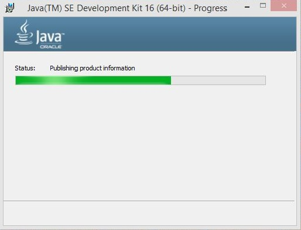
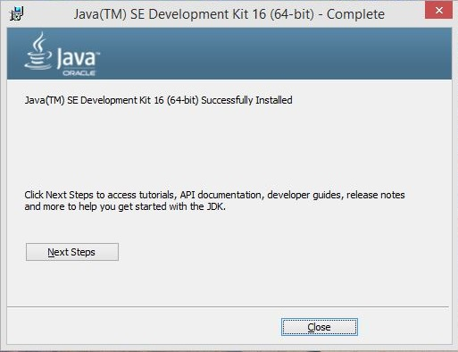
Setting PATH JDK
setelah berhasil meng-install Java JDK, kita harus setting PATH terlebih dahulu supaya Java bisa digunakan. berikur cara setting path JDK (Java Development Kit)
- Buka folder instalasi Java dan masuk ke folder bin selanjutnya copy alamat folder tersebut, atau kalian bisa langsung copy alamat folder ini C:\Program Files\Java\jdk-16\bin
- Selanjutnya Buka panel System komputer anda, dengan cara klik kanan My Computer lalu pilih Property. selanjutnya pada panel System, pilih Advanced System Setting.
- Selanjutnya pada panel System Properties, klik Envirolment Variable.
- Setelah itu cari System Variable yang bernama PATH kemudian klik edit.
- Selanjutnya paste alamat folder Java yang sudah kita copy pada bagian pertama di PATH tersebut. Pada windows 8 jangan lupa beri titik kome (;) sebelum men-copy. Selanjutnya klik OK
- Langkah terakhir kita akan mencoba apakah java sudah ter-install dengan baik, dengan cara buka CMD dan ketik "java --version"
- Jika output sama seperti gambar diatas maka java telah berhasil di-install dengan benar dan sudah siap digunakan.
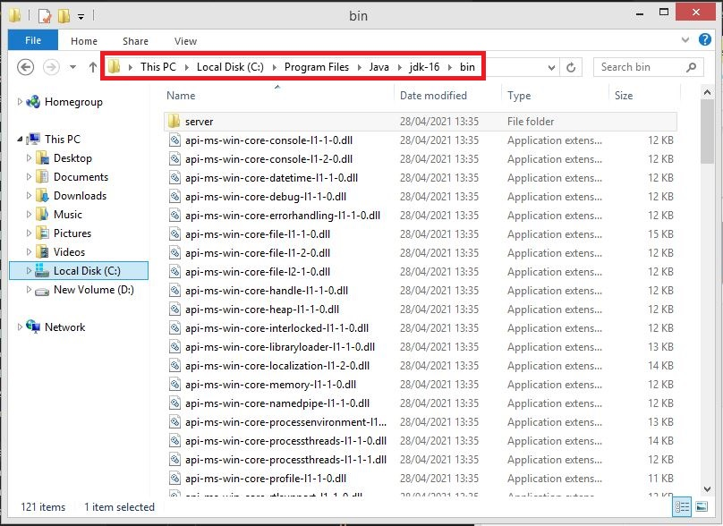
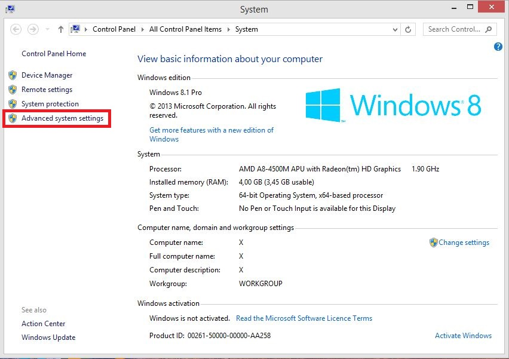
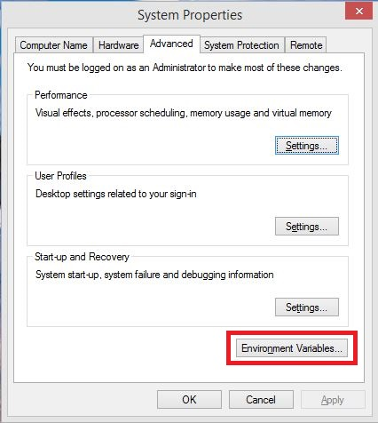
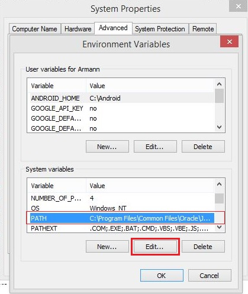
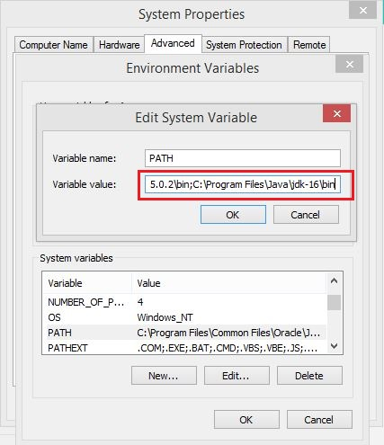
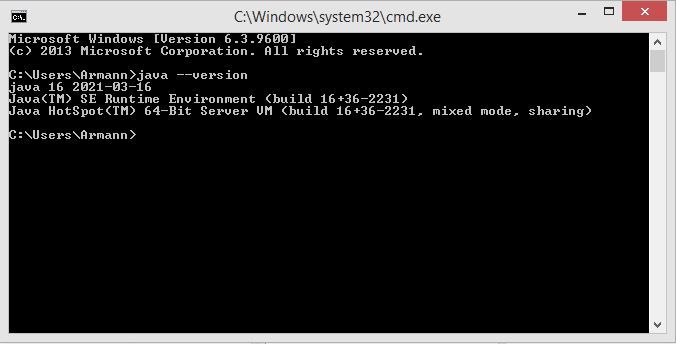
Terima kasih sudah membaca tutorial meng-install Java JDK semoga membantu.